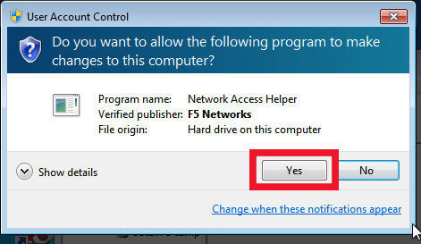

Click “Download standalone VPN client for MS Windows”
If your browser asks for permission to download the file, allow it to.
Step 2 - Setting up the Software
Install the file
Click on the newly installed program, F5 Networks
F5 will ask you to select Firepass Controller. Type in: vpn.mtu.edu
It will then ask you for your Michigan Tech username and password again. Enter those.
After that, go to the folder list on the left. Under “Network Access Controls,” select “Obtain a campus address with MTUCIFS WINS settings (override local WINS settings)” and click the “Create” button
Wait a short while until it reads “Status: connected” in the main window. Your firewall program may ask if you want to let the F5 VPN program through; you should allow it.

Step 3 - Mapping the Network Drive
Go to the Start menu and open up “computer” or “my computer”
On the top bar, click “Map Network Drive”
In the drive field, pick any letter to represent the drive that is not already used on your computer. For example, most machines have their hard drive labeled C: and a disk drive or USB thumb drive named one of the letters D-H, so those might be bad picks, but any letter from M to Z is usually un-used.
Copy and paste the following text into the folder field, then press “finish”: \\multidrive.iso.mtu.edu\multidrive
A window may pop up saying “Attempting to connect to \\multidrive.iso.mtu.edu\multidrive”. Usually it happens too quickly to notice, but if it takes longer just wait for it connect.
Windows security will ask for a username and password. Copy and paste the following into the username field, followed by your Michigan tech username after it, with no spaces in between: MTU\
Enter your Michigan Tech password. We suggest you also check the box marked “remember my credentials” so that you can skip this step in future. Then press “OK”.
It will tell you that it is trying to connect. Once it does, you can access your Michigan Tech multidrive by going to the start menu, clicking “computer”, and then clicking on whatever you named the new drive.
Reconnecting to the drive
Click on the F5 Networks VPN Client shortcut
The firepass controller should pop up with vpn.mtu.edu already entered; click “connect”
Enter your Michigan Tech username and password when asked
After that, go to the folder list on the left. Under “Network Access Controls,” select “Obtain a campus address with MTUCIFS WINS settings (override local WINS settings)” and click the “Create” button
Wait a short while until it reads “Status: connected” in the main window. Your firewall program may ask if you want to let the F5 VPN program through; you should allow it.
Go to the Start menu and open up “computer” or “my computer”
Click on the Multidrive icon to open it. You are connected.
See "Step 2 - Setting up the Software" to see pictures of these steps if you have trouble


{kind=link}


{kind=link}
{kind=link}
{kind=link}
{kind=link}


{kind=link}
{kind=link}